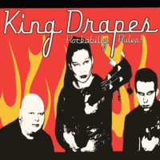

King Drapes - Rockabilly Rules! (Album, 2006)
01 - Flyin' Wheel (2:51)
02 - Yes I Care (2:53)
03 - Bluest Blue (3:23)
04 - Ranger (3:50)
05 - Human Torpedo (3:00)
06 - Hello Stranger (2:29)
07 - Best Of Wines (2:51)
08 - Cat On The Roof (2:14)
09 - Fallin' Down (3:35)
10 - Gunning For The Dog (2:11)
11 - Paint Red & Rose (2:45)
12 - Rockabilly Rules OK! (2:39)
13 - She Knew (2:01)
14 - To The Wanderers (3:16)
15 - Everybody's Movin' (2:11)
© Raucous Records :: [RAUCD 164]
Notes
Finland.
Anu-Katja Savolainen - Vocals, Bass guitar
Sami Savolainen - Guitar, Backing vocals
Rami Laine - Drums, Percussion, Backing vocals
Juha Schali - Drums on tracks 06, 08, 13
Markku Salminen - Saxophone on track 11
Ari Berghall - Bass guitar on tracks 03, 14
Jussi Peltonen - Bass guitar on track 13
Keno - Keyboards on track 04
Recorded at Studio Livingroom by Keno (Turku, Finland), except "Hello Stranger", "Cat On The Roof", "She Knew" recorded by Jusku
Songs number 02, 03, 04, 07, 08, 11, 13, 14 are written by Anu-Katja Savolainen and composed by Sami Savolainen
Songs number 01, 05, 09 are written and composed by Sami Savolainen
reference information: Discogs®
Review
108/366 (Project 366)
This is the only album of the King Drapes that I listened to. But I really liked it and still like it. I don't know how much it reflects all their work, but these records are quite special. Particularly noteworthy is how it is recorded and how it sounds, tunes, manner of performance and the very fact of the female vocalist (and double bass player).
Modern rockabilly that is balanced and bouncing around Rock'n'Roll and Rockabilly Revival, (neo)Rockabilly wave, Rockers and Teds bunches, countryside mood. There are also a lot of general rockin' tunes and rowdy tides. Pretty good and enthusiastically.